New Chair to Prof. Shaked
Prof. Natan T. Shaked has received the
Chair (Cathedra) of Advanced Biomedical Optical Microscopy
in Tel Aviv University
Plenary Lecture in SPIE PW
Prof. Shaked was honored to give a Plenary Lecture in SPIE Photonics West, San Francisco, CA, USA, on 29 January 2023
Lecture title:
Deep2Deep: AI and deep learning for label-free 3D cell classification
https://spie.org/photonics-west/event/biophotonics-focus-ai-ml-dl-plenary/2656964
BME Department Chair to Prof. Shaked
Prof. Shaked has been appointed as the Chair of the Department of Biomedical Engineering in Tel Aviv University (containing 15 research groups and ~500 undergraduate & graduate students).
New paper in Science Advances
High-resolution 4D acquisition of freely swimming human sperm cells without staining
Gili Dardikman-Yoffe, Simcha K. Mirsky, Itay Barnea, and Natan T. Shaked
Abstract: We present a new acquisition method that enables high-resolution, fine-detail full reconstruction of the three-dimensional movement and structure of individual human sperm cells swimming freely. We achieve both retrieval of the three-dimensional refractive-index profile of the sperm head, revealing its fine internal organelles and time-varying orientation, and the detailed four-dimensional localization of the thin, highly-dynamic flagellum of the sperm cell. Live human sperm cells were acquired during free swim using a high-speed off-axis holographic system that does not require any moving elements or cell staining. The reconstruction is based solely on the natural movement of the sperm cell and a novel set of algorithms, enabling the detailed four-dimensional recovery. Using this refractive-index imaging approach, we believe we have detected an area in the cell that is attributed to the centriole. This method has great potential for both biological assays and clinical use of intact sperm cells.
Science Advances, Vol. 6, No. 15, eaay7619, 2020 [Link]
Download: [PDF, Supp Mat, Video 1, Video 2, Video 3, Video 4, Video 5]
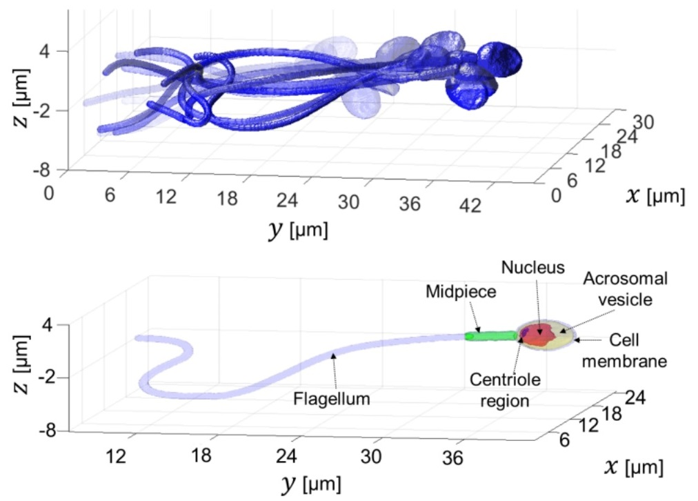
Rapid label-free refractive-index tomography of a sperm cell during free swim.
Congrats to Maysam Nasser
Congrats to Maysam Nasser for winning the prestigious Neuberger Foundation Fellowship for excellent PhD Arab Students!
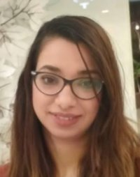 |
Mayssam Nassir is a PhD student in the Department of Biomedical Engineering at Tel Aviv University. Mayssam received her BSc in the Department of Biomedical Engineering in Tel Aviv University (2011). She completed her MSc thesis on modeling the mechanical behavior of Mesenchymal Stem Cells based on phase-contrast microscopy method in the Department of Mechanical Engineering at Tel Aviv University (2016). Mayssam filled a position of Mechanical Engineer in a growing startup for a few years. Then, she started her PhD in the OMNI group, studying the mechanical behavior of sperm cells through computerized modeling techniques and methods. |
Full Professor to Prof. Shaked
Prof. Shaked has been promoted to a Full Professor Rank.
New paper in Advanced Science
New paper in Advanced Science, 2016:
Rapid three-dimensional refractive-index imaging of live cells in suspension without labeling using dielectrophoretic cell rotation
Mor Habaza, Michael Kirschbaum, Christian Guernth-Marschner, Gili Dardikman, Itay Barnea, Rafi Korenstein, Claus Duschl, and Natan T. Shaked
Abstract:
A major challenge in the field of optical imaging of live cells is achieving rapid, three-dimensional (3-D) and noninvasive imaging of isolated cells without labeling. If successful, many clinical procedures involving analysis and sorting of cells drawn from body fluids, including blood, can be significantly improved. We present a new label-free tomographic interferometry approach that provides rapid capturing of the 3-D refractive index distribution of single cells in suspension. The cells flow in a microfluidic channel, are trapped and rapidly rotated by dielectrophoretic forces in a noninvasive and precise manner. Interferometric projections of the rotated cell are acquired and processed into the cellular 3-D refractive index map. Uniquely, this approach provides full (360o) coverage of the rotation angular range on any axis, and knowledge on the viewing angle. Our experimental demonstrations include 3-D, label-free imaging of both large cancer cells and three-types of white blood cells. This approach is expected to be useful for label-free cell sorting, as well as for detection and monitoring of pathological conditions resulting in cellular morphology changes or occurrence of contain cellular types in blood or other body fluids.
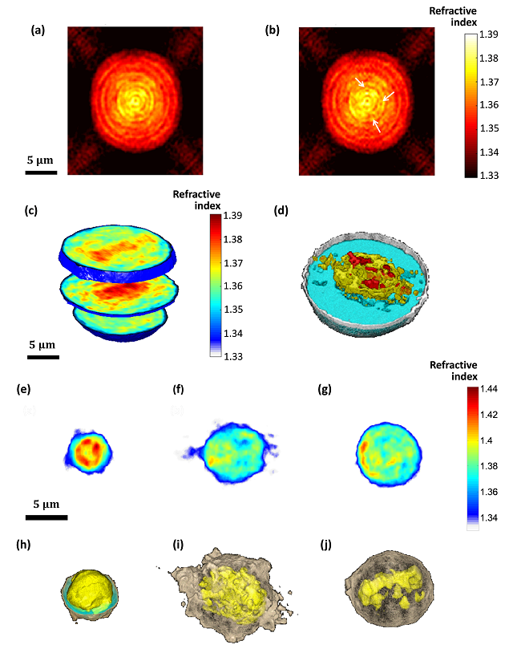
(a,b) Refractive-index maps of an MCF-7 cell at the mid-sagittal slice for using a full cell rotation on a single axis (a) and on two axes (b). The arrow indicate details that are clearer when rotating the cell on two axes. (c,d) 3-D renderings (c) and rendered iso-surface plot (d) of the refractive-index map of the reconstructed refractive index map of an MCF-7 cancer cell. (e-j) Refractive index maps of three types of white blood cells at the mid-axial positions (e-g), and the coinciding rendered iso-surface plots of the refractive-index maps (h-j); (e,h) T cell, see also Supplementary Video 4; (f,i) Monocyte, see also Supplementary Video 5; (g,j) Neutrophil, see also Supplementary Video 6.
New paper accepted to Optics Express
New paper accepted to Optics Express
New paper in Optics Express, 2016:
Video-rate processing in tomographic phase microscopy of biological cells using CUDA
Gili Dardikman, Mor Habaza, Laura Waller, and Natan T. Shaked
Abstract:
We suggest a new implementation for rapid reconstruction of three-dimensional (3-D) refractive index (RI) maps of biological cells acquired by tomographic phase microscopy (TPM). The TPM computational reconstruction process is extremely time consuming, making the analysis of large data sets unreasonably slow and the real-time 3-D visualization of the results impossible. Our implementation uses new phase extraction, phase unwrapping and Fourier slice algorithms, suitable for efficient CPU or GPU implementations. The experimental setup includes an external off-axis interferometric module connected to an inverted microscope illuminated coherently. We used single cell rotation by micro-manipulation to obtain interferometric projections from 73 viewing angles over a 180° angular range. Our parallel algorithms were implemented using Nvidia’s CUDA C platform, running on Nvidia’s Tesla K20c GPU. This implementation yields, for the first time to our knowledge, a 3-D reconstruction rate higher than video rate of 25 frames per second for 256 × 256-pixel interferograms with 73 different projection angles (64 × 64 × 64 output). This allows us to calculate additional cellular parameters, while still processing faster than video rate. This technique is expected to find uses for real-time 3-D cell visualization and processing, while yielding fast feedback for medical diagnosis and cell sorting.
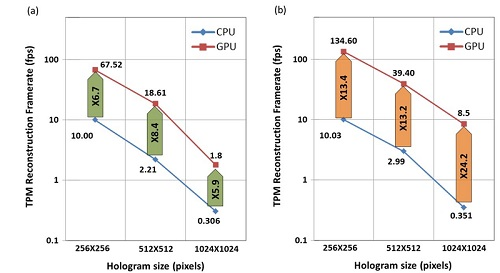
Average reconstruction rates (fps) and speedups when comparing the CPU and GPU efficient implementations, for various input hologram sizes (a) Rates including reading and writing to/from the CPU and memory transfers to/from the GPU when relevant; (b) Rates not including reading and writing to/from the CPU. © 2016 OSA
Dr. Claus Duschl
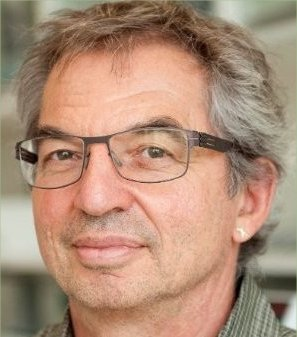 |
Affiliations: Department of Molecular and Cellular Bioanalytics Fraunhofer Institute of Cell Therapy and Immunology Postdam, Germany . Website: http://www.linkedin.com/in/claus-duschl-a0741a13 .
Collaboration Project: Dielectrophoresis for biological cell tomography. |
Dr. Raja Giryes
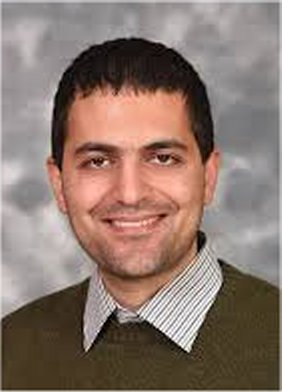 |
Affiliations: Department Electrical Engineering Systems School of Electrical Engineering Tel Aviv University Israel . Website: http://web.eng.tau.ac.il/~raja . Collaboration Project: Deep learning in interferometric cell imaging. |
New Microscopy May Identify Best Sperm Cells
TAU researcher’s cutting-edge innovation pinpoints top candidates for assisted reproductive technology
New microscopic technology from Tel Aviv University promises to be a game-changer in the field of reproductive assistance. A team of TAU scientists have devised a new method of microscopy allowing scientists to perform clinical sperm analysis without the use of staining, which can affect the viability of sperm samples. See here for the full story.
1.9 M Euro award from the ERC
Nov. 2015
Grant title:
OptiQ-CanDo: Hybrid Optical Interferometry for Quantitative Cancer Cell Diagnosis
.
.


{kind=link}
{kind=link}
{kind=link}
{kind=link}
{kind=link}
{kind=link}
{kind=link}
Pinhas and Irena got married. Congrats
First internal marriage in our group:
Pinhas and Irena got married.
Congrats!!
.
New paper accepted to Fertility and Sterility
New paper in Fertility and Sterility, 2015:
Interferometric phase microscopy for label-free morphological evaluation of sperm cells
Miki Haifler, Pinhas Girshovitz, Gili Band, Gili Dardikman, Igal Madjar, and Natan T. Shaked
Abstract:
Objective: To compare label-free interferometric phase microscopy (IPM) to label-free and label-based bright-field microscopy (BFM) in evaluating sperm cell morphology. This comparison helps in evaluating the potential of IPM for clinical sperm analysis without staining.
Design: Comparison of imaging modalities.
Setting: University laboratory.
Patient(s): Sperm samples were obtained from healthy sperm donors. Intervention(s): We evaluated 350 sperm cells, using portable IPM and BFM, according to World Health Organization (WHO) criteria. The parameters evaluated were length and width of the sperm head and midpiece; size and width of the acrosome; head, midpiece, and tail configuration; and general normality of the cell.
Main Outcome Measure(s): Continuous variables were compared using the Student’s t test. Categorical variables were compared with the X^2 test of independence. Sensitivity and specificity of IPM and label-free BFM were calculated and compared with label-based BFM.
Result(s): No statistical differences were found between IPM and label-based BFM in the WHO criteria. In contrast, IPM measurements of head and midpiece width and acrosome area were different from those with label-free BFM. Sensitivity and specificity of IPM were higher than those with label-free BFM for the WHO criteria.
Conclusion(s): Label-free IPM can identify sperm cell abnormalities, with an excellent correlation with label-based BFM, and with higher accuracy compared with label-free BFM. Further prospective clinical trials are required to enable IPM as part of clinical sperm selection procedures.
[Link]
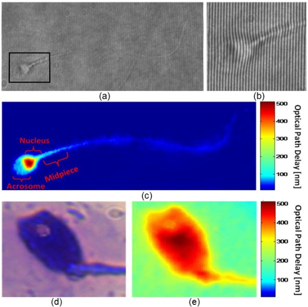
(a) An interferogram obtained using IPM. The sample is still barely seen. However, the OPD information is encoded into the bend of the interference fringes, as can be seen from the enlarged region of interest in (b). (c) The OPD map of the same sperm cell, as digitally calculated from the interferogram shown in (a). All the main morphological features of the cell are discernable. (c, e) Imaging of a sperm cell with an acrosomal vacuole, using: (d) label-based BFM, and (e) label-free IPM. The vacuole is clearly seen as a defect in the OPD map of the IPM image. BFM = bright-field microscopy; IPM = interferometric phase microscopy; OPD = optical path delay. Elsevier 2015(c).
New paper accepted to Optics Letters
New paper in Optics Letters, Vol. 40, Issue 10, pp. 2273-2276, 2015:
Off-axis interferometer with adjustable fringe contrast based on polarization encoding
Sharon Karepov, Natan T. Shaked, and Tal Ellenbogen
Abstract: We propose a compact, close-to-common-path, off-axis interferometric system for low polarizing samples based on a spatial polarization encoder that is placed at the Fourier plane of a conventional transmission microscope. The polarization encoder erases the sample information from one polarization state and maintains it on the orthogonal polarization state, while retaining the low spatial frequencies of the sample, and thus enabling quantitative phase acquisition. In addition, the interference fringe visibility can be controlled by polarization manipulations. We demonstrate this concept experimentally by quantitative phase imaging of a USAF 1951 phase test target and human red blood cells with optimal fringe visibility and single-exposure phase reconstruction.
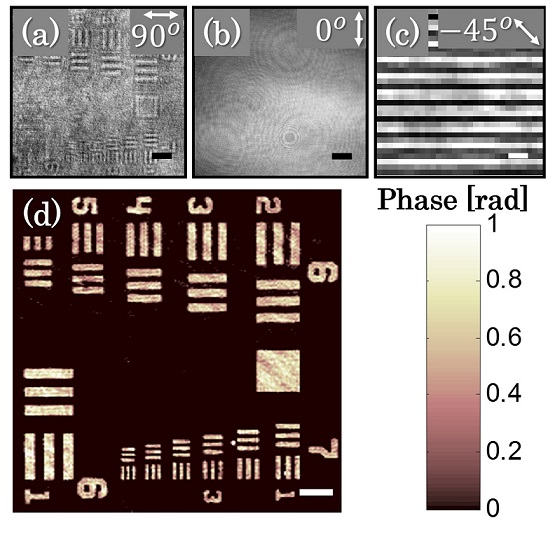
Imaging of USAF 1951 phase test target using the polarization encoding interferometer. (a) Intensity image with co-polarized analyzer (at 90°), associated with the sample arm, and (b) with cross-polarized analyzer (at 0°), associated with the reference arm. (c) The off-axis interference obtained on a small area of the background. (d) The reconstructed quantitative phase map. Scale bars are 26.7 μm in (a), (b) and (d), and 6.8 μm in (c).
New paper accepted to Nature LSA
New paper accepted to Nature – Light Science & Applications (Nature LSA), 2015:
Omry Blum and Natan T. Shaked
Abstract: We present a new approach for predicting spatial phase signals originated from photothermally excited metallic nanoparticles of arbitrary shapes and sizes. Heat emitted from the nanoparticle affects the measured phase signal via both the nanoparticle surrounding refractive index and thickness changes. Since these particles can be bio-functionalized to bind certain biological cell components, they can be used for biomedical imaging with molecular specificity, as new nanoscopy labels, and for photothermal therapy. Predicting the ideal nanoparticle parameters requires a model that computes the thermal and phase distributions around the particle, enabling more efficient phase imaging of plasmonic nanoparticles, and sparing trial and error experiments of using unsuitable nanoparticles. For the first time to our knowledge, using the proposed model, one can predict phase signatures from nanoparticles with arbitrary parameters. The proposed nonlinear model is based on a finite-volume method for geometry discretization, and an implicit backward Euler method for solving the transient inhomogeneous heat equation. To validate the model, we correlate its results with experimental results obtained for gold nanorods of various concentrations, which we acquired by a custom-built wide-field interferometric phase microscopy system.
[Link] [PDF, Video 1, Video 2, Video 3, Video 4, Video 5, Video 6, Video 7]
.
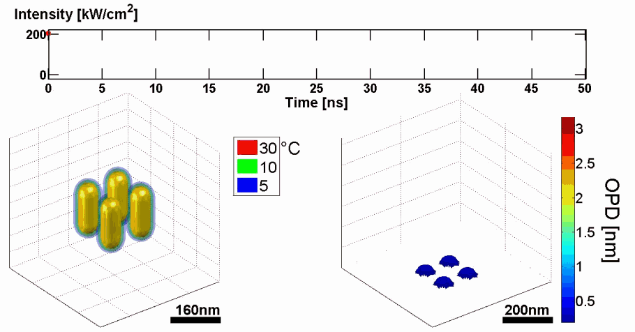
Demonstration of using the proposed model for simulating the thermal and phase distributions of a structure of four gold nanoparticles. Top: optical excitation profile. Bottom left: heat distribution. Bottom right: optical path delay distribution.
New paper accepted to Optics Letters
New paper in Optics Letters, Vol. 40, Issue 8, pp. 1881-1884 (2015):
Tomographic phase microscopy with 180° rotation of live cells in suspension by holographic optical tweezers
Mor Habaza, Barak Gilboa, Yael Roichman, and Natan T. Shaked
Abstract: We present a new tomographic phase microscopy (TPM) approach that allows capturing the three-dimensional refractive-index structure of single cells in suspension without labeling using 180° rotation of the cells. This is obtained by integrating an external off-axis interferometer for wide-field wave front acquisition with holographic optical tweezers (HOTs) for trapping and micro-rotation of the suspended cells. In contrast to existing TPM approaches for cell imaging, our approach does not require anchoring the sample to a rotating stage nor is it limited in angular range as is the illumination rotation approach, and thus it allows TPM of suspended live cells in a wide angular range. The proposed technique is experimentally demonstrated by capturing the three-dimensional refractive-index map of yeast cells while collecting interferometric projections at an angular range of 180° with 5° steps. The interferometric projections are processed by both the filtered back-projection method and the diffraction-theory method. The experimental system is integrated with spinning-disk confocal fluorescent microscope for validation of the label-free TPM results.
[PDF, Media 1, Media 2, Media 3, Media 4] [Link]
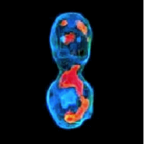
3-D refractive index map of yeast cells obtained by the proposed TPM-HOTs technique.
Three Excellent Student Awards for the group members
Congratulations to Omry for winning the Rector Award of Excellence (first place), to Mor for winning the Dean Award of Excellence, and to Noa for winning the Dean Award of Excellence!
New paper in Optics Letters, Vol. 39, No. 6, 1525-1528, 2014:
Off-axis interferometric phase microscopy with tripled imaging area
Irena Frenklach, Pinhas Girshovitz, and Natan T. Shaked
Abstract: We present a novel interferometric approach, referred as interferometry with tripled-imaging area (ITIA), for tripling the quantitative information that can be collected in a single camera exposure, while using off-axis interferometric imaging. This The ITIA technique enables optical multiplexing of three off-axis interferograms onto a single camera sensor, without changing the imaging-system characteristics, such as magnification and spatial resolution, or losing temporal resolution (no scanning is involved). This approach is useful for many applications in which interferometric and holographic imaging are used. Our experimental demonstrations include quantitative phase microscopy of a USAF 1951 test target, thin diatom shells and live human cancer cells.
ITIA for quantitative phase imaging of HeLa cells. In muted colors – the scanned field of view (FOV), which is larger than the camera FOV. Three quantitative phase images reconstructed from a single multiplexed interferogram acquired simultaneously, without any scanning. Scale bar indicates 50 μm.
New paper in Nature LSA
Doubling the field of view in off-axis low-coherence interferometric imaging
Pinhas Girshovitz and Natan T. Shaked
.
Abstract: We present a new interferometric and holographic approach, named interferometry with doubled imaging area (IDIA), with which it is possible to double the camera field of view while performing off-axis interferometric imaging, without changing the imaging parameters, such as the magnification and the resolution. This technique enables quantitative amplitude and phase imaging of wider samples without reducing the acquisition frame rate due to scanning. The method is implemented using a compact interferometric module that connects to a regular digital camera, and is useful in a wide range of applications in which neither the field of view nor the camera frame rate can be compromised. Specifically, the IDIA principle allows doubling the off-axis interferometric field of view, which might be narrower than the camera field of view due to low-coherence illumination. We demonstrate the proposed technique for scan-free quantitative optical thickness imaging of microscopic biological samples, including live neurons, and rapid human sperm cell in motion under large magnification. In addition, we used the IDIA principle to perform non-destructive profilometry during a rapid lithography process of transparent structures.
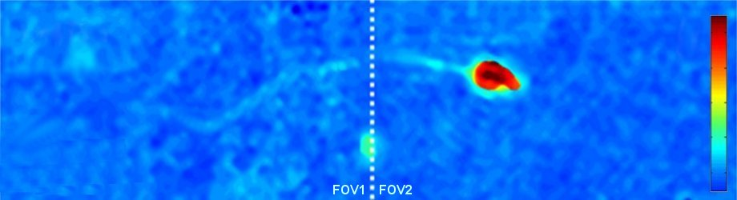
Quantitative optical thickness maps of a human spermatozoon swimming, as recorded by IDIA under low coherence illumination, enabling the acquisition of the fast dynamics of the spermatozoon with fine details on a doubled field of view. The white dashed line indicates the location of the stitching between the two fields of view. The color bar represents the quantitative optical thickness.
New paper accepted to Journal of Biomedical Optics
.
N. A. Turko, A. Peled, and N. T. Shaked, “Wide-field interferometric phase microscopy with molecular specificity using plasmonic nanoparticles,” Journal of Biomedical Optics, Vol. 18, No. 11, 111414:1-8, 2013.
.
Abstract: We present a method for adding molecular specificity to wide-field interferometric phase microscopy (IPM) by recording the phase signatures of gold nanoparticles (AuNPs) labeling targets of interest in live cells. The AuNPs are excited by light at a wavelength corresponding to their absorption spectral peak, evoking a photothermal (PT) effect due to their plasmonic resonance. This effect induces a local temperature rise, resulting in local refractive index and phase changes that can be detected optically. Using a wide-field interferometric phase microscope, we acquired an image sequence of the AuNPs sample phase profile without requiring lateral scanning, and analyzed the time-dependent profile of the entire field of view using a Fourier analysis, creating a map of the locations of AuNPs in the sample. The system can image a wide-field PT phase signal from a cluster containing down to 16 isolated AuNPs. AuNPs were then conjugated to epidermal growth factor receptor (EGFR) antibodies and inserted to an EGFR-overexpressing cancer cell culture, which was imaged using IPM, and verified by confocal microscopy. To the best of our knowledge, this is the first time wide-field interferometric PT imaging is performed at the subcellular level without the need for a total-internal-reflection effects or scanning.
.
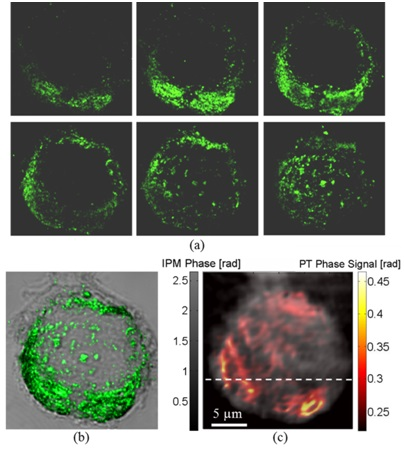
(a) Confocal imaging: Six consecutive confocal images of the AuNPs in the cell, from top-left image, representing the bottom of the cell, to bottom-right image, representing the top of the cell, in axial steps of 0.5 µm apart.
(b) Confocal plus DIC imaging: Cumulative confocal image of the AuNPs (colored), as obtained by summing the six consecutive confocal images shown in (a), overlaying a DIC image of the same cel (grayscale).
(c) PT IPM plus regular IPM imaging: PT phase image of the AuNPs (colored), overlaying a wide-field IPM phase image of the same cell (grayscale).
Figure is modified from Journal of Biomedical Optics [PDF].
New paper accepted to Optics Letters
Haniel Gabai, Maya Baranes-Zeevi, Meital Zilberman and Natan T. Shaked
Abstract: We obtained continuous, noncontact wide-field imaging and characterization of drug release from a polymeric device invitro by uniquely using off-axis interferometric imaging. Unlike the current gold-standard methods in this field, which are usually based on chromatography and spectroscopy, our method requires no user intervention during the experiment, and involves less lab consumable instruments. Using a simplified interferometric imaging system, we experimentally demonstrate the characterization of anesthetic drug release (Bupivacaine) from a soy-based protein matrix, used as skin substitute for wound dressing. Our results demonstrate the potential of interferometric imaging as an inexpensive and easy-to-use alternative for characterization of drug release in-vitro.
.
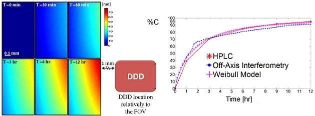
Left - Quantitative phase profile resulted from drug release during 12 hours as measured by continuous wide-field interferometric imaging. The right lower frame illustrates the DDD location relatively to the FOV.
Right - Cumulative drug release profiles obtained from HPLC (solid line), off-axis interferometry (dotted line) and Weibull model (crossed line) for drug release period of 12 hours.
Figure is modified from Optic Letters [PDF].
Congratulations to the new graduates
Congratulations to Itay Shock for receiving his MSc yesterday, to Pini for his BSc with Distinction, and to Irena for her BSc.
Excellent Graduate-Student Awards
Congrats to Pini and Haniel for winning the Excellent Graduate-Student Award (and 4000 NIS).
Two prizes in the same lab is a good thing for all of us.
Four new oral presentations in OSA/SPIE conferences in Munich, Germany, May 16, 2013
- I. Frenklach, P. Girshovitz and N. T. Shaked,
”Quantitative cell nucleus analysis obtained by integrating simultaneous interferometric phase and fluorescence microscopy,”
OSA European Conferences on Biomedical Optics (ECBO)
Munich, Germany
May 16, 2013
. - P. Girshovitz and N. T. Shaked,
”Compact interferometric module for quantitative phase microscopy of biological cells,”
OSA European Conferences on Biomedical Optics (ECBO)
Munich, Germany
May 16, 2013
. - N. T. Shaked, Y. Bishitz, H. Gabai, and P. Girshovitz,
“Optical-mechanical properties of diseased cells measured by interferometry,”
SPIE Optical Metrology 2013
Conference 8792: Optical Methods for Inspection, Characterization, and Imaging of Biomaterials
Munich, Germany
May 16, 2013
. - H. Gabai, M. Baranes-Zeevi, M. Zilberman, and N. T. Shaked,
“Noninvasive continuous imaging of drug release from soy-based skin equivalent using wide-field interferometry,”
SPIE Optical Metrology 2013
Conference 8792: Optical Methods for Inspection, Characterization, and Imaging of Biomaterials
Munich, Germany
May 16, 2013
New invited talk in OSA DH 2013, April 24, Hawaii
[Invited]
N. T. Shaked, “Low-coherence, common-path, and dynamic holographic microscopy and nanoscopy for biomedicine using portable systems,” OSA Digital Holography and 3D Imaging, Kohala Coast, Hawaii, USA, April 21-25, 2013.
Two new oral presentations in SPIE Photonics West, February 2013
N. T. Shaked and P. Girshovitz, “Portable low-coherence interferometer for quantitative phase microscopy of live cells,” SPIE Photonics West, Biomedical Optics (BiOS), San Francisco, California USA, February 2-7, 2013.
N. Turko and N. T. Shaked, “Wide-field interferometric phase imaging of plasmonic nanoparticles at the subcellular level,” SPIE Photonics West, Biomedical Optics (BiOS), San Francisco, California USA, February 2-7, 2013.
| Valerie C. Coffey, “Optical microscopy quantifies live cells without labels,” Biophotonics, October 2012.
.“Researchers at Tel Aviv University in Israel recently used IPM to record the phase of transparent samples without labeling at a rate of up to thousands of frames per second (a submillisecond rate). Professor Natan Shaked and colleagues in the department of biomedical engineering used live video to quantitatively image a monolayer of transparent HeLa human cervical cancer cells with subnanometer accuracy (albeit laterally diffraction-limited at a resolution of 600 nm) without labeling or physical contact with the sample.”
|
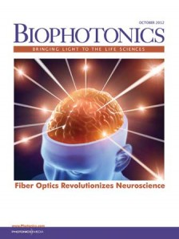 |
New paper in Optics Express
Dual-channel low-coherence interferometry and its application to quantitative phase imaging of fingerprints
H. Gabai and N. T. Shaked
Abstract:
We introduce a low-coherence, dual channel and common-path interferometric imaging system for three dimensional imaging of fingerprints for both biomedical and biomertical applications.The proposed system is simple to align, and requires no alignmet in order to obtain interference with low-coherence light source, thus enabling non-expert useres to benifit from the attractive advantages of low-coherence, common-path and dual-channel interferometry. In our case, we have used the dual-channel property in order to create a noise reduced and DC supressed equivalent hologram, from which we were able to derive a high quality, with nano-meter resolution depth profile of fingerprints
The figure shows measurements of thick samples (up to 100 microns) using low-coherence, common-path, wide-field phase interferometry with two-wavelength unwrapping. (a) Two 180°-phase-shifted interferograms of a finger-print template, acquired simultaneously (dual imaging channel). The dashed white square indicates on the scar location. (b) Depth profile distorted by blurring (in blue). Significant distortion can be seen in the upper-right part of the image. (c) Final result with improved contrast obtained by using the two interferograms to decrease noise. (d) Final result in three-dimensional view.
.
[Download PDF] [Journal ink].
New oral presentations in OSA Frontiers in Optics, October 2010
Presented in OSA Frontiers in Optics, Rochester, NY, USA, October 2010:
Cell life cycle characterization based on generalized morphological parameters for interferometric phase microscopy.
P. Girshovitz and N. T. Shaked.
Dual-channel digital holography imaging for fingerprint biometrics.
H. Gabai and N. T. Shaked.
Optical-mechanical signature of cancer cells measured by interferometry.
Y. Bishitz, H. Gabai and N. T. Shaked.
Prof. Tal Ellenbogen
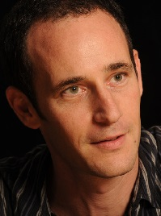 |
Affiliations: Department of Physical Electronics School of Electrical Engineering Tel Aviv University Israel . Website: http://www.eng.tau.ac.il/~tal/neolab/contacts.html . Collaboration Project: Metamaterials uses for interferometry. |
Journal cover page in Biomedical Optics Express
Our paper got the cover page in Biomedical Optics Express:
P. Girshovitz and N. T. Shaked, “Generalized cell morphological parameters based on interferometric phase microscopy and their application to cell life cycle characterization,” Biomedical Optics Express, Vol. 3, No. 8, pp. 1757-1773, 2012 [PDF, Media 1] [Link].
Electromagnetic Fields and Waves for Biomedicine
.
Course Name: Electromagnetic Fields and Waves for Biomedicine (new course)
.
Lecturer: Dr. Natan T. Shaked
.
Course planned for: 2012/2013, First semester.
.
Yossi Kamir (Alumni, 2012-2013)
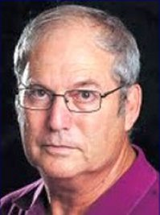 |
Yossi Kamir was the OMNI group mechanical designer. He has vast experience in R&D system integration and lab research mainly in the 2D and 3D printing business. He contributed to system design and definition, designed the lab jigs for the research tests and performed them, gave feedback to the developers in order to fix the bugs and problems all the way to a working prototype in companies such as Scitex Ltd., Varyframe Technologies Ltd. and Objet Geometries Ltd.
. .
Contact Details:
Email: yosikk@gmail.com
|
Haniel Gabai, BSc BME (Alumni, 2011-2013)
MSc Student (Direct Track)
| 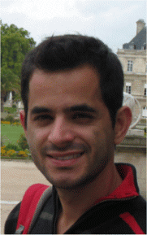 |
Haniel Gabai was a full-time, direct-track MSc student in the Department of Biomedical Engineering. He holds a BSc degree in Biomedical Engineering from Tel Aviv University with specialization in biological signal processing. Haniel started working on his thesis in the OMNI group in November 2011. His research subjects included optical coherence tomography application to skin cancer. He graduated in September 2013.
.
Next Position after OMNI Group: PhD student in Prof. Avishay Eyal’s group, School of Electrical Engineering, Tel Aviv University . Contact Details: Email: haniel.gabai@gmail.com |
Dr. Anna Peled, PhD Chemistry (Alumni, 2012)
Postdoctorate Associate
| Dr. Anna Peled was a Postdoctorate Associate in the Department of Biomedical Engineering at Tel Aviv University, Israel since January 2012. She received her BSc degree in Chemistry (Pharmaceutical Chemistry), MSc degree in Chemistry (Nanotechnology) and PhD degree in Chemistry (pending) in the Bar-Ilan University, Department of Chemistry, in 2005, 2007 and 2011, respectively. During her MSc and PhD, she focused on the development of functional hybrid nanomaterials. Her field of research was development of various plasmonic nanoparticles for specific targeting and photothermal imaging of amyloid beta plaques for studying Alzheimer’s disease. . Next Position after OMNI Group: Postdoctoral Associate in Prof. Fernando Patolsky’s Lab, School of Chemistry, Tel Aviv University. Then, R&D chemist at PolyPid . Contact Details:
Email: aniapeled@yahoo.com
|
Amit Litwin (Alumni, 2015-2016)
Irena Frenklach, BSc BME (Alumni 2013-2015)
MSc Student
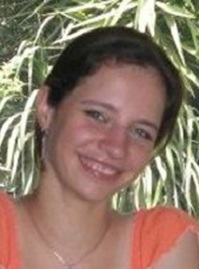 |
Irena Frenklach was an MSc student in Department of Biomedical Engineering at Tel Aviv University. She finished her BSc in Biomedical Engineering in Tel Aviv University in September 2012, with majors in biomedical signals and systems. In October 2012, she started her MSc thesis on “Development of analytic tools and new parameters based on interferometric methods for phase measurement in biological cells”.
. |
Dr. Ksawery Kalinowski, PhD Physics (Alumni, 2015-2016)
Dr. Tamir Gabay, PhD ECE (Alumni, 2011-2017)
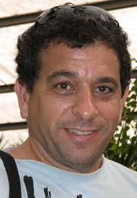 |
Dr. Tamir Gabay was the OMNI Group Laboratory Engineer. Tamir received his BSc degree in Electrical Engineering, MSc degree in Bio-Electrical Engineering, and PhD degree in Electrical Engineering in the Faculty of Engineering, Tel-Aviv University, Israel in 1985, 1995 and 2009, respectively. During his MSc he worked on cardial electrical signal research. Specifically the role of synchronization during ventricular fibrillation. His PhD thesis is titled “Carbon nanotube microelectrode array for neuronal patterining and recording”. Currently, he is involed in the research on the role of Amyloid β on neuronal dynamics.
Next position after the OMNI Group: Engineer and project coordinator of the Department of Biomedical Engineering, Tel Aviv University. Contact Details: Office: Room 108, Multi-Disciplinary Center
Tel: +972-3-6408001 Fax: +972-3-6408001 Cellular: +972-50-5522124 Email: tamirgab@post.tau.ac.il |
Dr. Michal Balberg, PhD Neural Computation (Alumni, 2015-2017)
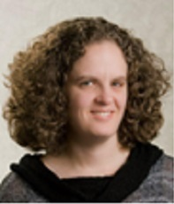 |
Dr. Michal Balberg is a seasoned entrepreneur in the field of medical devices. She co-founded and led OrNim Medical from inception till commercial sales. Ornim develops and markets noninvasive monitoring devices based on acousto-optics. Dr. Balberg received her Ph.D. in Neural Computation, focusing on optics, volume holography and neural computation, from the Hebrew University of Jerusalem in 1998. Between 1998-2001, she was a Fellow and a Visiting Assistant Professor in the Beckman Institute, University of Illinois at Urbana-Champaign, IL, USA. She joined the OMNI group in March 2015, and was in charge of the Momentum project for commercialization of interferometric technologies for clinical applications.
Contact Details:
Current Position: Senior Lecturer (Assistant Professor), Faculty of Engineering, Holon Technical College (HIT), Holon, Israel. |
Yaniv Gaon, BSc Electooptics Engineering, MBA (Alumni, 2017-2018)
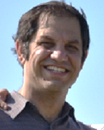 |
Yaniv Gaon was the OMNI Group Laboratory Engineer. Yaniv joined the OMNI Group in September 2017 and brings with him over 15 years of hands-on experience in research, development and production of electro-optical systems. Yaniv has thorough understanding of optical systems, optical components, lasers, laser beam shaping, light sources, sensors, detectors and other optical and electro-optical technologies. Yaniv holds a BSc degree in Electro-Optics engineering and an MBA degree, both from the Jerusalem College of Technology (JCT), Israel.
Contact Details: Cellular: +972-58-4315858 |
Dr. Pinkie Jacob, PhD Materials and Nano Eng. (Alumni, 2016-2018)
Dr. Gyanendra Singh, PhD Physics (Alumni 2016-2018)
Gili Dardikman, MSc BME (Alumni 2014-2019)
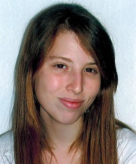 |
Gili Dardikman was a full-time, direct-track PhD student in the Department of Biomedical Engineering at Tel Aviv University. Her BSc specialization included signals and systems in biomedical engineering. In October 2014, she started her thesis in the OMNI group focusing on machine learning , and rapid CUDA processing of holograms.
Next Position after OMNI Group: Postdoc of Computer Science in the Weizmann Institute, Rehovot, Israel. Contact Details:
Email: gilid@mail.tau.ac.il |
Lauren Wolbromsky, BSc BME (Alumni 2016-2019)
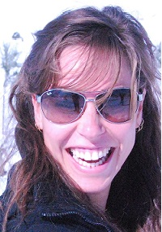 |
Lauren Wolbromsky was an MSc Student in the Department of Biomedical Engineering at Tel Aviv University. She obtained her BSc in the same field with a focus on signals and systems. Her research project was on new tomographic phase microscopy methods in OMNI group.
Next Position after OMNI Group: R&D Physicist at Orbotech, Yavne, Israel. Contact Details:
Email: bornstein@mail.tau.ac.il |
Hadar Shimoni (Alumni, 2019)
Yoav Nygate, BSc BME (Alumni 2016-2020)
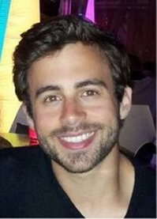 |
Yoav Nygate was a full-time, direct-track MSc student in the Department of Biomedical Engineering at Tel Aviv University. His BSc specialization includes Signals and Systems in Biomedical Engineering. In October 2016, he started working in the OMNI group on measurements of the optical path delay of cancerous cells using off-axis white light interferometry. He then went on to develop an off-axis multiplexing interferometer for the simultaneous acquisition of Quantitative Phase and Fluorescence images of biological cells. Currently, Yoav is working on different Deep Learning approaches for the analysis of Quantitative Phase images. On his spare time, Yoav is an active member of the International Society for Optics and Photonics (SPIE), serving as the President of the SPIE student chapter at Tel Aviv University.
Next Position after OMNI Group: Senior AI and Machine Learning Engineer at EnsoData Madison, Wisconsin, USA. Contact Details:
Email: yoavnygate@gmail.com
|
Noga Nissim, BSc BME (Alumni, 2017-2020)
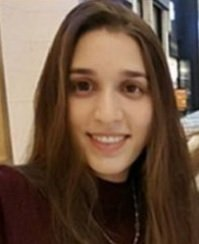 |
Noga Nissim was a full-time, direct-track MSc student in the Department of Biomedical Engineering at Tel Aviv University. Her BSc specialization is signals and systems in biomedical engineering. In August 2017, she started working in the OMNI group, focusing on machine learning of blood cells.
Next Position after OMNI Group: Algorithm Developer at WSC Sports, Givatayim, Israel. Contact Details:
Email: noganissim@mail.tau.ac.il |
Shir Cohen Maslaton, BSc BME (Alumni, 2017-2020)
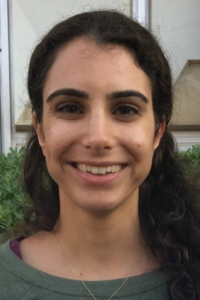 |
Shir Cohen Maslaton was a full-time, direct-track MSc student in the Department of Biomedical Engineering at Tel Aviv University. Her BSc specialization is signals and systems in biomedical engineering. In August 2017, she started her MSc in the OMNI group, focusing on interferometric microscopy combining molecular specificity.
Next Position after OMNI Group: Algorithm developer in QART Medical, Raanana, Israel. Contact Details:
Email: shirc2@mail.tau.ac.il |
Lina Atamny, BA Chemistry (2017-2020)
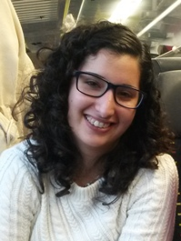 |
Lina Atamny was an MSc student in the School of Chemistry at Tel-Aviv University, working under the joint supervision of Prof. Natan Shaked and Prof. Yael Roichman. Lina obtained her BA degree in Chemistry in 2015 at Tel-Aviv University focused on physical chemistry. Her undergraduate project done in the group of Prof. Yoram Selzer was titled “The measuring and calibration of the resolution for Squeezable breaking junction system”. Currently she is synthesizing gold nano-structures for optical manipulation and imaging.
|
Dr. Rongli Guo, PhD Optics (Alumni, 2019-2020)
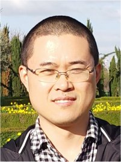 |
Dr. Rongli Guo received his BS degree in applied physics and his MS degree in Optical Engineering from Chongqing University, China, in 2003 and 2006, respectively. He obtained his PhD degree in Optics from the University of Chinese Academy of Sciences, Xi’an Institute of Optics and Precision Mechanics, China, in 2015. In 2019-2020, he worked as a Postdoctoral Associate with the OMNI group, Israel. His current research interests included interferometric phase imaging and 3D refractive-index tomography for biological cells.
Contact Details: |
Dr. Garry Berkovic, PhD Chemistry (Alumni, 2020)
|
Dr. Garry Berkovic, whose permanent position is a Research Scientist at Soreq NRC-Yavne, was spending his sabbatical year (2020) as a Visiting Scientist in the OMNI group. Garry received his PhD in 1983 from the Weizmann Institute of Science, and has worked in research for four decades at the Weizmann Institute, University of California, Berkeley (post-doc), Soreq NRC, and Bar-Ilan University (sabbatical). He has published approximately 140 research papers on various topics including spectroscopy, nonlinear optics, and fiber optics. In the OMNI group, he is working on combining Raman spectroscopy and interferometry for imaging of biological samples.
Contact Details: |
Nir Turko, MSc BME (Alumni, 2015-2021)
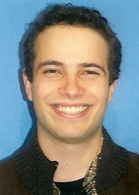 |
Nir Turko was a PhD student in the Department of Biomedical Engineering at Tel Aviv University. He completed his BSc in Electrical Engineering in Tel Aviv University (2010) and spent a few years in the industry. He completed his MSc thesis on optical interferometry with plasmonic nanoparticles for biomedical imaging in the Department of Biomedical Engineering at Tel Aviv University (2015). He started his PhD in quantitative phase microscopy of dynamic samples, focusing on developing optical methods and algorithms to increase throughput of phase imaging with molecular specificity. Nir is an active member of the International Society for Optics and Photonics (SPIE), serving as the secretary and vice presidnet of the SPIE student chapter in Tel-Aviv University. He is the co-author of 16 refereed journal papers and 15 conference publications.
Next Position after the OMNI Group: R&D Physicist Professional Leader, Orbotech, Yavne, Israel. Contact Details: |
Rachel Cur-Cycowicz
BSc Project Student
Daniel Benvaish
BSc Project Student
Dana Goldkorn, BSc ECE
MSc Student
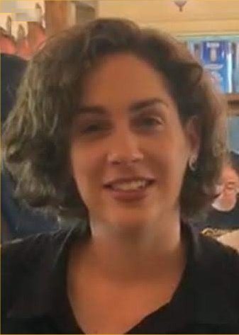 |
Dana Goldkorn is an MSc student in the Department of Electrical Engineering at Tel Aviv University. She received her BSc in Electrical and Computer Engineering at Ben Gurion University in 2015. In October 2019, she started working in the OMNI group, focusing on image processing and deep learning. She is currently working on applying different deep learning techniques on quantitative phase images for virtual staining of biological cells.
Contact Details:
Email: danagoldkorn@mail.tau.ac.il
|
{kind=link}
Almog Taieb, BSc BME
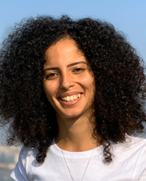 |
Almog Taieb is a full-time, direct-track MSc student in the Department of Biomedical Engineering at Tel Aviv University. Her BSc specialization is signals and systems in biomedical engineering. In August 2019, she joined the OMNI group and started working on a combination of Raman spectroscopy and Interferometry for tissue imaging, and on the integration of optical interferometry and fluorescence imaging of biological cells Contact Details: |
Yuval Atzitz, BSc BME
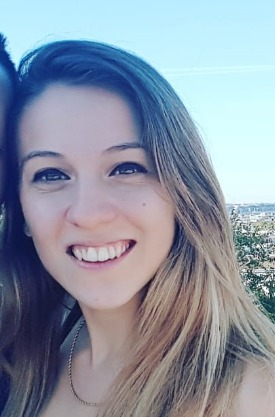 |
Yuval Atzitz is a full-time, direct-track MSc student in the Department of Biomedical Engineering at Tel Aviv University. Her BSc specialization is signals and systems in biomedical engineering. In August 2019, she started her MSc in the OMNI group, focusing on tomography and profiling of cells. Contact Details: |
Keren Ben-Yehuda, BSc BME
| Keren Ben-Yehuda is a full-time MSc student in the Department of Biomedical Engineering at Tel-Aviv University. Her B.Sc. specialization includes Signals and Image processing in Biomedical Engineering. In October 2018, she joined the OMNI group and started working on applying different deep learning approaches for the analysis of quantitative phase images in order to assess human sperm cells and provide clinicians with better tools by which they can select sperm cells for in-vitro fertilization.
Contact Details: |
Lidor Karako, BSc BME
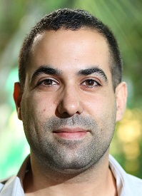 |
Lidor Karako is an MSc student in the Department of Biomedical Engineering at Tel Aviv University. He received his BSc from the same department in 2017. In August 2016, together with Dr. Itay Barnea, he started working in the OMNI group on enabling label-free quantitative imaging method for sperm analysis using interferometric phase microscopy (IPM). IPM was used for measurements of the optical path delay, correlated with genetic tests. In October 2017, he started his MSc in the OMNI group on tomography of biological cells.
Contact Details:
Email: LidorKarako@gmail.com |
Noa Rotman-Nativ, BA Biology
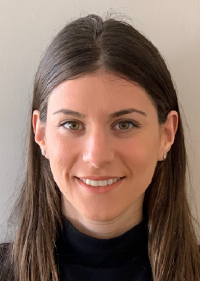 |
Noa Rotman is a full-time MSc student in the Department of Biomedical Engineering at Tel Aviv University. She holds a BSc in Biology from Tel Aviv University. In March 2017, she started working in the OMNI group on measurements of the optical path delay of cancerous cells using off-axis interferometry. She developed a new compact off-axis multiplexing interferometer for the acquisition of quantitative phase images of biological cells. Currently, Noa is working on image processing algorithms and deep learning classification for cancer cells. |
|
Idan Steinberg
Shira Zapesotsky, BSc Physics
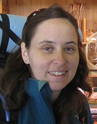 |
Shira Shinar ( Zapesotsky ) is an MSc Student in the Department of Biomedical Engineering at Tel Aviv University. She obtained her BScS in Physics from the Hebrew University of Jerusalem in 2013. During her final year of BSc studies, she worked on building an auxiliary system for a two-photon microscope in the Department of Neuro-Science. In October 2014, she started working toward her thesis in the OMNI group, focusing on acousto-optical interferometry.
Contact Details: |
Simcha Mirsky, MSc BME
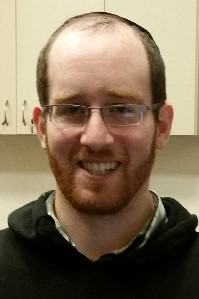 |
Simcha Mirsky is a PhD student in the Department of Biomedical Engineering at Tel Aviv University. Simcha received his BSc in Medical Engineering from the Jerusalem College of Technology in 2012. His BSc focuses on electro-optical engineering and its application in medical devices and diagnostics. After receiving his BSc, Simcha completed his army service in the Medical Engineering Branch of the IDF as an officer in the Medical Engineering Development Unit. He did his MSc in the OMNI group on sperm phase imaging between March 2016-February 2018. His PhD works, started in March 2018, focuses on off-axis hologram multiplexing.
|
Dr. Gili Dardikman-Yoffe, PhD BME
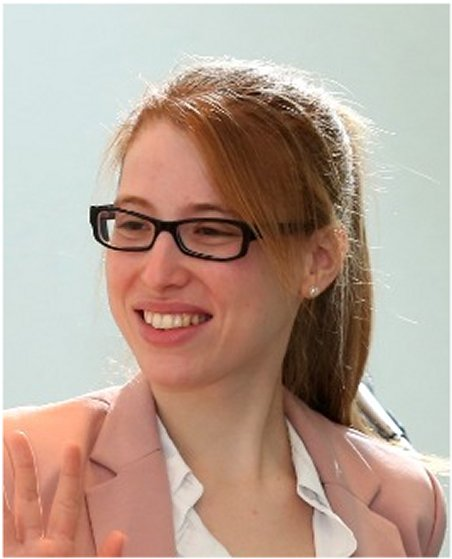 |
Dr. Gili Dardikman-Yoffe is a full-time Research Fellow in the OMNI Group, specializing in deep-learning algorithm development and image analysis, starting from 2021. She obtained her PhD in Biomedical Engineering from Tel Aviv University in 2019, and then did a Postdoc in the Faculty of Mathematics and Computer Science in the Weizmann institute of Science. She won several prestigious awards, including the Clore Foundation Fellowship for PhD students, the David and Paulina Trotsky Foundation award, the ISMBE Award for PhD students, and the Faculty Postdoctoral Excellence Fellowship at the Weizmann Institute of Science.
.
Contact Details:
Email: gilid@mail.tau.ac.il
|
Dr. Itay Barnea, PhD Biology
|
Dr. Itay Barnea is a full-time Postdoctoral Research Fellow in the OMNI Group. He started from January 2013. He did his BSc in the Department of Life Sciences in the Ben Gurion University of the Negev, his MSc in the Department of Immunology and Cell Science, and PhD in the Medical School, both in the Tel Aviv University. He dealt with different aspects of cancer: genetic variation, molecular epidemiology, and signal-transduction-based targeted therapy. His current research includes measuring cancer cell metastatic degree using interferometry.
Contact Details: |
{kind=link}
Dr. Mattan Levi, PhD Biology
Visiting Scientist, Embryologist
| Dr. Mattan Levi is a Clinical Embryologist and the manager of the IVF Laboratory in Meir Medical Center. Till 2021, he was the manager of the Andrology Laboratory at Herzeliya Medical Center in Israel (one of the largest IVF centers in Israel). Mattan received his PhD in Cell and Developmental Biology from Tel Aviv University. He conducted research at the fields of reproductive and cancer biology, and was the founder and director of oncology research laboratory at Rabin Medical Center. Mattan collaborated with the OMNI group for several years as a consultant in developing a selection criteria of sperm cells imaged by interference phase microscopy as part of the Momentum project sponsored by Ramot at Tel Aviv University. Since May 2019, he joined the OMNI group as a Visiting Scientist (part time, 20%).
Contact Details:
Email: mattanlevi@gmail.com |